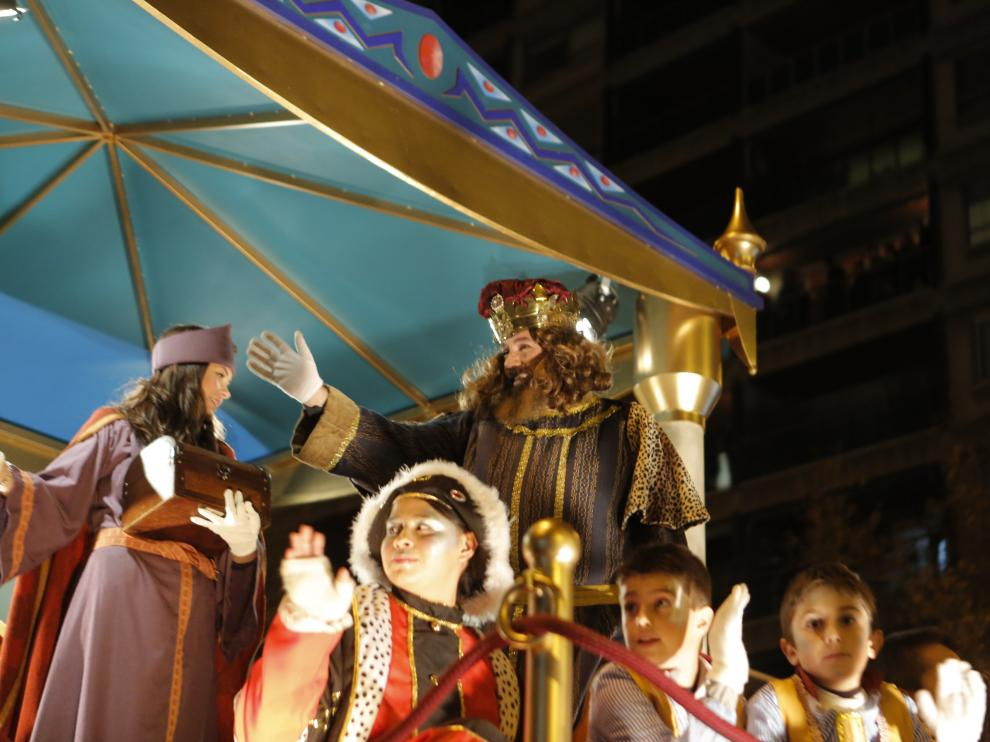
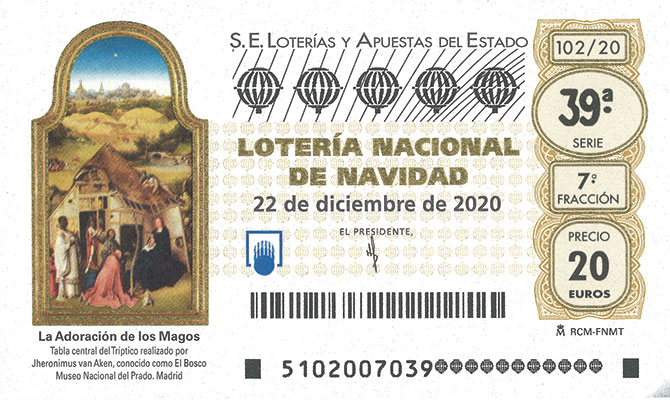

La
fiesta arranca en España de forma prácticamente oficial el día 22 de
diciembre con el sorteo de Navidad de la Lotería Nacional. A su premio
principal, se le conoce popularmente como “El Gordo”. La participación
es masiva y el sorteo es muy seguido durante toda la mañana. Tiene una
peculiaridad que lo hace muy original: los números premiados los cantan
niños y niñas con un ritmo inconfundible.
Son
fechas de elaboradas comidas con familiares y amigos. La noche más
especial es la del 24 de diciembre, Nochebuena, cuando restaurantes y
hoteles ofrecen menús extraordinarios para celebrarla a lo grande.
Normalmente se incluyen numerosos entrantes a base, por ejemplo, de
jamón ibérico, mariscos y ricos quesos, seguidos por platos como sopas,
asados de carne o pescado o pavo relleno.
En España hay alumbrados navideños que pueden presumir de provocar el asombro en niños y mayores. Ciudades como Madrid, Barcelona, Málaga o Vigo han sido quizás las más llamativas en los últimos años, pero, desde finales de noviembre, es habitual que todas iluminen cada noche sus calles con colores y motivos navideños. De hecho, un buen plan para disfrutar en Navidad es un paseo nocturno bien abrigado y con un cucurucho de castañas asadas en la mano por los mercadillos navideños y belenes.
Esta
tradición promete suerte y es un modo original de cambiar de año.
Consiste en tomarse 12 uvas a las 12 de la noche del día 31 de
diciembre y hacerlo al ritmo de las 12 campanadas que dan la bienvenida
al nuevo año. Frente al televisor siguiendo las campanadas del famoso
reloj de la Puerta del Sol de Madrid, en vivo en la misma Puerta del
Sol o en el lugar emblemático donde se celebren las campanadas en tu
destino, cualquier opción es buena para celebrar la llegada del nuevo
año.
Es la noche del 6 de enero, cuando llegan a España los Reyes Magos de Oriente y traen regalos a todos los niños. Es tradición que cada niño escriba antes una carta a los reyes explicándoles cómo se han portado este año y pidiendo regalos. En centros comerciales y espacios de ocio se habilitan buzones para enviar estas cartas y con frecuencia los pajes reales aparecen para recogerlas en mano. Finalmente, la tarde del 5 de enero los Reyes Magos llegan a todas las ciudades con una divertida cabalgata por las calles que encanta a los niños


| Navidad |
Noche Buena |
Tradiciones |
Villancicos |
Películas Navideñas |